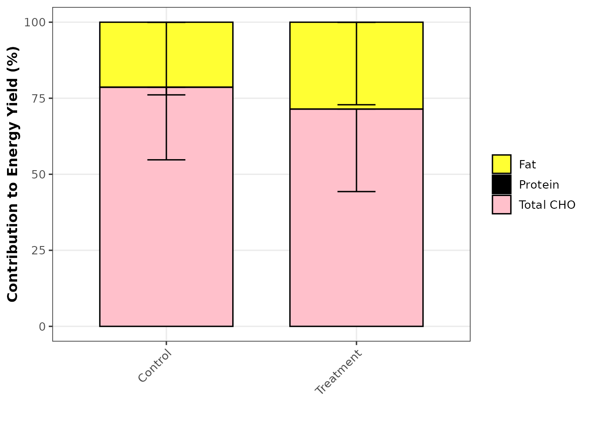

Introduction
The oxidizr package provides tools for analyzing
substrate oxidation during exercise using indirect calorimetry and
stable isotope tracers. This vignette demonstrates the basic workflow
for analyzing oxidation data.
Installation
# Install from local source
devtools::install("path/to/oxidizr")
# Or from GitHub (when available)
# remotes::install_github("jtremblay/oxidizr")Basic Workflow
2. Create Sample Data
For this example, we’ll create some simulated calorimetry data:
# Simulated calorimetry data
calo_df <- data.frame(
id = rep(1:5, each = 4),
protocol = rep(c("Control", "Treatment"), each = 10),
time = rep(c(30, 60, 90, 120), 5),
vo2 = rnorm(20, mean = 2.5, sd = 0.2),
vco2 = rnorm(20, mean = 2.3, sd = 0.2)
)
# Preview the data
head(calo_df)
#> id protocol time vo2 vco2
#> 1 1 Control 30 2.219991 2.393631
#> 2 1 Control 60 2.551063 2.372590
#> 3 1 Control 90 2.012547 2.039091
#> 4 1 Control 120 2.498886 2.447555
#> 5 2 Control 30 2.624311 2.677701
#> 6 2 Control 60 2.729682 2.2805113. Create a CalorimetryData Object
The first step is to wrap your data in an S7 class:
calo <- CalorimetryData(
data = calo_df,
id_col = "id",
time_col = "time",
vo2_col = "vo2",
vco2_col = "vco2",
vo2_unit = "L/min",
protocol_col = "protocol"
)
# Print summary
print(calo)
#>
#> ── CalorimetryData ─────────────────────────────────────────────────────────────
#> • Subjects: 5
#> • Time points: 4
#> • Observations: 20
#> • VO2 unit: L/min
#> • Protocols: Control, Treatment4. Calculate Substrate Oxidation
Use the calc_substrate_oxidation() function to calculate
CHO and fat oxidation:
oxidation <- calc_substrate_oxidation(calo)
# View results
head(oxidation)
#> # A tibble: 6 × 10
#> id time protocol cho_total fat_total protein_ox rer rer_np vo2_lmin
#> <int> <dbl> <chr> <dbl> <dbl> <dbl> <dbl> <dbl> <dbl>
#> 1 1 30 Control 3.77 0 0 1.08 1.08 2.22
#> 2 1 60 Control 2.59 0.306 0 0.930 0.930 2.55
#> 3 1 90 Control 2.82 0 0 1.01 1.01 2.01
#> 4 1 120 Control 3.11 0.0879 0 0.979 0.979 2.50
#> 5 2 30 Control 3.76 0 0 1.02 1.02 2.62
#> 6 2 60 Control 1.58 0.769 0 0.835 0.835 2.73
#> # ℹ 1 more variable: vco2_lmin <dbl>5. Calculate Energy Contributions
Convert oxidation rates to energy yield and percentages:
energy <- calc_energy_yield(oxidation)
energy <- calc_energy_percent(energy)
# View energy percentages
energy |>
dplyr::select(id, time, pct_cho_total, pct_fat, e_total) |>
head()
#> # A tibble: 6 × 5
#> id time pct_cho_total pct_fat e_total
#> <int> <dbl> <dbl> <dbl> <dbl>
#> 1 1 30 100 0 14.0
#> 2 1 60 77.0 23.0 12.5
#> 3 1 90 100 0 10.5
#> 4 1 120 93.3 6.69 12.4
#> 5 2 30 100 0 14.0
#> 6 2 60 44.8 55.2 13.16. Visualize Results
Energy Contribution Bar Chart
# Create results object for plotting
results <- OxidationResults(
oxidation_rates = as.data.frame(oxidation),
energy_contributions = as.data.frame(energy)
)
plot_energy_contribution(results, by = "protocol")
7. Summary Tables
Create publication-ready tables:
tbl_oxidation_summary(results, by = "protocol")| protocol | n | Total CHO (g/min) | Fat (g/min) | Protein (g/min) |
|---|---|---|---|---|
| Control | 10 | 2.60 ± 0.86 | 0.28 ± 0.31 | 0.00 ± 0.00 |
| Treatment | 10 | 2.68 ± 1.29 | 0.38 ± 0.37 | 0.00 ± 0.00 |
Advanced: Using Isotope Tracers
For studies using 13C-labeled substrates, you can calculate exogenous carbohydrate oxidation:
# Create isotope data
iso_data <- IsotopeData(
rexp = rexp_df, # Expired CO2 enrichment
rexo = rexo_df, # Exogenous substrate enrichment
rref = rref_df, # Reference enrichment
rpla = rpla_df # Plasma glucose enrichment (optional)
)
# Create study object
study <- oxidation_study(
calorimetry = calo,
isotopes = iso_data
)
# Run complete analysis
results <- analyze_oxidation(
study,
time_range = c(30, 120),
control_protocol = "Control"
)
# Plot CHO partitioning
plot_cho_partition(results, by = "protocol")Key Formulas
Stoichiometric Equations
The package uses stoichiometric equations for carbohydrate and fat oxidation. These are based on general principles (Livesey & Elia, 1988) with specific coefficients parameterized as presented in Telmosse (2022), derived from Institute of Medicine (2005) data.
Carbohydrate oxidation:
Fat oxidation:
References
- Institute of Medicine, Food and Nutrition Board. (2005). Dietary Reference Intakes for Energy, Carbohydrate, Fiber, Fat, Fatty Acids, Cholesterol, Protein, and Amino Acids. National Academies Press.
- Livesey, G., & Elia, M. (1988). Estimation of energy expenditure, net carbohydrate utilization, and net fat oxidation and synthesis by indirect calorimetry: evaluation of errors with special reference to the detailed composition of fuels. The American Journal of Clinical Nutrition, 47(4), 608–628.
- Péronnet, F., & Massicotte, D. (1991). Table of nonprotein respiratory quotient: an update. Canadian Journal of Sport Sciences = Journal Canadien Des Sciences Du Sport, 16(1), 23–29.
- Telmosse, E. (2022). Contribution des glucides exogènes à la fourniture d’énergie lors d’un effort prolongé : analyse par régression multiple. Mémoire de maîtrise, Université de Montréal.
Session Info
sessionInfo()
#> R version 4.5.2 (2025-10-31)
#> Platform: x86_64-pc-linux-gnu
#> Running under: Ubuntu 24.04.3 LTS
#>
#> Matrix products: default
#> BLAS: /usr/lib/x86_64-linux-gnu/openblas-pthread/libblas.so.3
#> LAPACK: /usr/lib/x86_64-linux-gnu/openblas-pthread/libopenblasp-r0.3.26.so; LAPACK version 3.12.0
#>
#> locale:
#> [1] LC_CTYPE=C.UTF-8 LC_NUMERIC=C LC_TIME=C.UTF-8
#> [4] LC_COLLATE=C.UTF-8 LC_MONETARY=C.UTF-8 LC_MESSAGES=C.UTF-8
#> [7] LC_PAPER=C.UTF-8 LC_NAME=C LC_ADDRESS=C
#> [10] LC_TELEPHONE=C LC_MEASUREMENT=C.UTF-8 LC_IDENTIFICATION=C
#>
#> time zone: UTC
#> tzcode source: system (glibc)
#>
#> attached base packages:
#> [1] stats graphics grDevices utils datasets methods base
#>
#> other attached packages:
#> [1] ggplot2_4.0.1 oxidizr_0.1.0
#>
#> loaded via a namespace (and not attached):
#> [1] gtable_0.3.6 jsonlite_2.0.0 dplyr_1.1.4 compiler_4.5.2
#> [5] tidyselect_1.2.1 stringr_1.6.0 xml2_1.5.1 tidyr_1.3.1
#> [9] jquerylib_0.1.4 systemfonts_1.3.1 scales_1.4.0 textshaping_1.0.4
#> [13] yaml_2.3.11 fastmap_1.2.0 R6_2.6.1 commonmark_2.0.0
#> [17] labeling_0.4.3 generics_0.1.4 warp_0.2.2 knitr_1.50
#> [21] htmlwidgets_1.6.4 forcats_1.0.1 tibble_3.3.0 desc_1.4.3
#> [25] bslib_0.9.0 pillar_1.11.1 RColorBrewer_1.1-3 rlang_1.1.6
#> [29] utf8_1.2.6 stringi_1.8.7 cachem_1.1.0 litedown_0.8
#> [33] xfun_0.54 fs_1.6.6 sass_0.4.10 S7_0.2.1
#> [37] cli_3.6.5 withr_3.0.2 pkgdown_2.2.0 magrittr_2.0.4
#> [41] digest_0.6.39 grid_4.5.2 markdown_2.0 slider_0.3.3
#> [45] lifecycle_1.0.4 vctrs_0.6.5 evaluate_1.0.5 glue_1.8.0
#> [49] farver_2.1.2 ragg_1.5.0 gt_1.1.0 rmarkdown_2.30
#> [53] purrr_1.2.0 tools_4.5.2 pkgconfig_2.0.3 htmltools_0.5.9